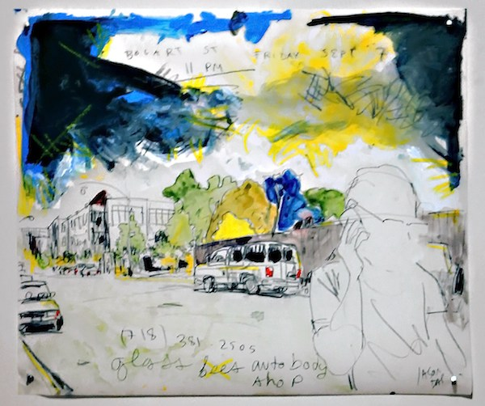
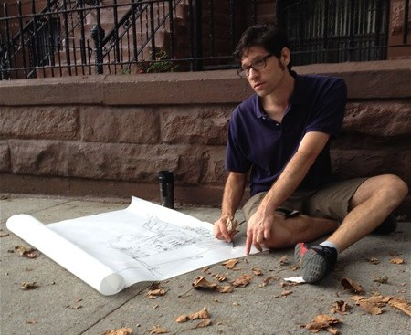
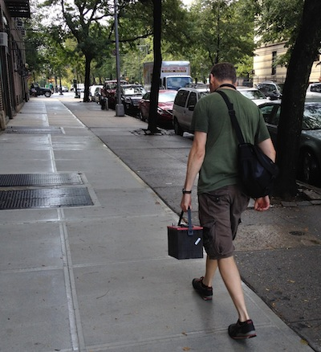
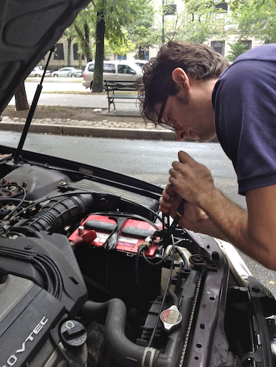
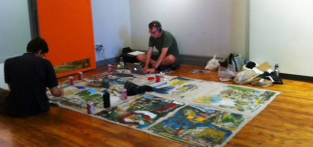
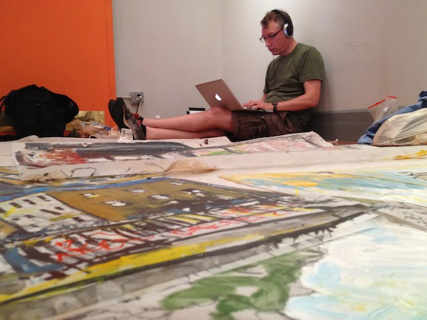

Creating “Unique Places of Death”
Floating in the Long Island Sound not far from City Island in the Bronx, Hart Island is the largest cemetery in the United States and has been New York City’s potter’s field for more than 150 years. Some 850,000 people have been buried there in unmarked mass graves, including the poor, the anonymous, and infants of parents without the means for a more dignified funeral. The island and its inhabitants exist in a cartographic and administrative limbo that has made the site illegal to visit and the exact locations of individual graves nearly impossible to determine.
At these locations we made paintings, gathered sounds, took photographs, and collected quotidian objects, all of which became raw material for an installation at the Bogart Salon, a gallery at 56 Bogart Street in Bushwick. The installation was created as part of Citydrift, a three-day festival organized to encourage exploration and engagement of the urban environment, and remained the gallery until September 16, 2012.
Below, you will find our final sound collage, detail views of the installation’s assemblages, and an illustrated timeline of the 28-hour project.
This mix of field recordings from the five places of death was played on a loop
(Bushwick Ave. & Varet St.)
(Classon Ave. & Lincoln Pl.)
(1323 Dean St.)
(1322 Bedford Ave.)
(65 Gates Ave.)
An assemblage was constructed for each place of death
(Click images to view larger)
{kind=link}


{kind=link}
Timeline: Friday, September 7, 2012
 Chris and Jason arrive at 56 Bogart. Melinda Hunt and the Hart Island Project have already hung burial records to cover a wall in the Bogart Salon. Chris had prepared a Google map of places of death in Brooklyn and Queens as listed in Hart Island burial records. We study it and plot the night’s itinerary.
Chris and Jason arrive at 56 Bogart. Melinda Hunt and the Hart Island Project have already hung burial records to cover a wall in the Bogart Salon. Chris had prepared a Google map of places of death in Brooklyn and Queens as listed in Hart Island burial records. We study it and plot the night’s itinerary.
We set off on foot from the gallery to our first “unique place of death” at the intersection of Bushwick Avenue and Varet Street. According to the Hart Island burial records, Louis Ramos died near here at the age of 30 on May 11, 1987. A public housing project hovers over the east side of Bushwick Ave. A laundromat, bodega, empty lot, and some row houses line the west side. At a playground on the housing project property, some children are taunting their parents with a repeating chorus of, “I saw you digging in your booty.” Finally, the elders run out of patience and shout them down. As Jason sketches he faces west on Bushwick.
Buoyant Friday night traffic passes by, including an SUV with a sound system as loud and clear as a night club. Impressive, but obnoxious. Chris becomes preoccupied with fences around the area,  including a very resonant length of sheet metal segments facing onto Varet. He also begins taking some pictures looking into the housing project but stops when a man shouts at him aggressively, marking his territory. Insects persistently scratch out pastoral evening songs above the din of an intensely urban environment.
including a very resonant length of sheet metal segments facing onto Varet. He also begins taking some pictures looking into the housing project but stops when a man shouts at him aggressively, marking his territory. Insects persistently scratch out pastoral evening songs above the din of an intensely urban environment.
We scavenge Varet for detritus, collecting it in a plastic bag lying on the sidewalk. Jason begins a collection of potato chip packaging. Over the course of our site visits, we realize that it is almost always possible to find a plastic bag lying on the street in New York City.
We return to Bogart Street with the goal of retrieving the car and driving to another site visit or two before calling it a night. When Chris inserts the key into the ignition and turns the key, the only response is a rapid clicking sound. Chris calls AAA and is told that the nearest tow locations are in Maspeth, Queens and south of Sunset Park in Brooklyn, two remote locations with inconvenient or nonexistent public transport connections.  As Chris is negotiating, Jason leans on the trunk of the car and sketches him on the phone. We first decide to leave the car overnight, figuring that there must be closer repair shops that would be open in the morning. We also begin asking people on Bogart Street if anyone has jumper cables.
We are lucky to meet a friendly woman named Mariana, who is in the neighborhood for dinner with her father and a friend. She fetches her aging Volvo, we hook up the cables, and the Honda is resurrected. A profusion of thank you’s follow. Fearing that our car troubles might be symptomatic of something more serious, and having lost a couple hours, we change our plans for the rest of the night and drive straight to Jason’s apartment in Crown Heights.
After parking the car we visit our second unique place of death, which is located very close to Jason’s apartment. At the intersection of Classon Avenue and Lincoln Place we find an empty storefront being renovated, a church, and a shuttered bodega. The location is the place of death of Matthew Bernard, aged 40, who was found here on November 3, 1982. Jason is feeling very tired from a weeklong illness at this point,  and his sketch and painting of the location prove to be very dark and quite uncharacteristic of his usual style.
and his sketch and painting of the location prove to be very dark and quite uncharacteristic of his usual style.
Chris photographs the empty storefront and records the sound of a Cablevision distribution box. Its incessant electric hum will serve as raw material for a droning section in the middle of our resulting sound mix.
Saturday September 8
Exhausted, we return to Jason’s apartment and go to sleep.
We start the morning by reviewing our map, and resolve to begin the day in Brownsville and gradually migrate back in the direction of the gallery. Upon trying to start the car, however, we find again that it won’t turn over. We are still not sure whether the problem is only a dead battery, or whether the alternator needs replacing, but are sure that we don’t want to spend the day dealing with repair shops. We change our plans to orient our site visits around a trip to an AutoZone shop 3/4 of a mile away on Atlantic Avenue.
After walking northwards on Franklin Ave. we turn right on Dean Street, passing some beautiful blocks with historic houses and churches near Nostrand Ave. 1323 Dean Street turns out to be a tired row house with faded yellow aluminum siding. Frank Crowder died here at the age of 49 on June 12, 1996. Jason sits on the sidewalk across the street and begins sketching  while Chris records the sound of a man meticulously sweeping leaves from his patch of sidewalk. We are struck by the peacefulness of the morning, families quietly beginning their Sunday, a gentle breeze in the trees. A woman stops to ask Jason about his sketching, wondering if a famous artist lives in her neighborhood.
We walk west on Pacific Street in the direction of Bedford Avenue. The blocks down this way have more large apartment buildings, evoking a colder mood. At the corner of Bedford and Pacific we reach our next destination, an impressive armory that fills most of the block between Pacific and Atlantic. The Hart Island records tell us an “unknown black male” died here on February 8, 1987. Parts of the building are used as a homeless shelter, and several men stand in conversation on the corner. One sits on the sidewalk and greets us as we walk by.
It starts to rain and we are fortunate to find a scaffolding surrounding much of the edifice. We take shelter as the rain intensifies, pouring heavily for the better part of an hour. Jason is happy to have brought his vellum paper along because it is more water-resistant than other fibers would have been. He occupies a patch of damp sidewalk and his sketch begins to capture the thick gray surrounding us. We find an open garage door that offers a view into the enormous interior volume of the armory, but are brusquely told to leave when Jason lingers to take photos. The man closes the door on us to chase us away. Five minutes later he opens it again and we are still there. Three police officers come to speak with us. They are friendly and tell Jason a bit about the shelter, but Mr. Brusque pulls one aside and talks to him under his breath, eyes askance at us. As water accumulates on the roof of the armory, it cascades over a clogged gutter like a waterfall. The rattling sound in one downspout turns violent, until the pipe becomes overfilled and a release valve erupts, sending a storm surge across the sidewalk.
 We make our way around the building to the corner of Bedford and Atlantic, where a large puddle has formed as the sewers back up. Chris is hit by a wave thrown by a passing car, and then steps back a safe distance and records the sound of 5-foot swells being thrown through the air by passing traffic. Being trapped between Atlantic and Pacific sounds like being at the ocean.
We make our way around the building to the corner of Bedford and Atlantic, where a large puddle has formed as the sewers back up. Chris is hit by a wave thrown by a passing car, and then steps back a safe distance and records the sound of 5-foot swells being thrown through the air by passing traffic. Being trapped between Atlantic and Pacific sounds like being at the ocean.
The rain abates and we walk west on Atlantic Avenue toward AutoZone to procure a battery. We find what we need, and Jason photographs an impromptu Glass Bees logo made with auto bling. When we reach the counter to pay we discover that it is not just our battery that is dead; the data connection that enables the AutoZone’s credit card machine is as well. We find an ATM at a gas station, return to the AutoZone, pay up, check out, and begin our hike back to Eastern Parkway, twenty-five pound deadweight in hand.
Back at the car, we begin the process of replacing the battery. We marvel at how engineers always seem to put screws in the most inaccessible places, but Jason finally manages to get a good grip. A man named Ray approaches us and begins by asking what we are planning to do with the old battery and whether he could have it. He has worked as a mechanic and explains that adding carbonated water to a dead battery can resuscitate it. He also diagnoses that the car’s alternator is still functional.
Once the new battery is installed the car energetically rises from its sleep, and Ray shows us that if you put a piece of metal near the alternator, the magnetic field that it generates should emit an attractive force. Relieved at not having spent over $100 in vain we thank Ray, hand over our casualty, and prepare to move on.
There is time for one more site visit before we need to be back at the Bogart Salon, and so we stop at 65 Gates Avenue. It turns out to be a lovely brownstone in Clinton Hill. Chris follows a woman with a collapsible shopping cart, recording the sound of aluminum jittering as it rolls across the sidewalk. A couple passes, pushing another cart with a squeaky wheel. Chris discovers that a parking sign can be played like a long, heavy, steel string, making sounds like a deep, mournful bell at different tones as you pluck it up and down its length.
While recording the rustling sound of a garbage bag in front of the brownstone, a young couple approaches asking, “Can I help you?” Chris apologizes for having been mistaken for a thief rummaging through their trash, and explains the Hart Island Project and our activity for the day. When the couple learns that Cerl Monroe had died in or in front of their house in October 1983, they say they are interested to find out about the history of their residence and even offer us a chance to look around inside.
We pass, knowing that we are expected soon back at the Bogart Salon to participate in a panel discussion.
We arrive back at Bogart in time for a 1:30 panel discussion involving all of the participants in the Hart Island node of Citydrift. We learn that our rushing back is for naught, as the panels are delayed.
We spread a tarp in the Bogart Salon and Jason lays his sketches out to do additional work. A fan being used to ventilate the warm, humid space blows the sheets around, making it difficult to work. Chris takes a place on the floor against a wall and begins sorting through the photos on his laptop. While we are working we hear a lecture about the meaning of freedom in the context of the arts, comparing it to the rhetoric of political freedom and 1960s libertarian notions of freedom. We are told that artistic freedom can be a practice for temporarily transcending normal senses of identity and convention. It is a dry, academic talk punctuated by technical problems with the slide show, but it begins to sound strangely familiar, following so closely on the heels of our interaction with the city in directed, attentive ways.
We sit on a panel with Melinda Hunt, Pamela Matsuda-Dunn, Stefan Eins, and Leonora Loeb, discussing our project in front of a camera in an otherwise empty room. The Hart Island burial records flutter on the wall behind us, reminding us of their presence as each of the artists spends a few minutes describing her or his work.

We enter an intensive period of preparation for our installation. With photo sets chosen, Chris struggles with the Bogart’s unstable WiFi connection to print pictures on an inkjet printer. Jason is intent on his sketches, working with acrylic paint, enamel markers, and graphite, quickly bringing them to life. Between efforts to manage the print queue, Chris listens to the field recordings collected during our site visits, editing them into samples for the live mix.
On at least one occasion he discovers the sound of a man singing that had been inaudible at the time of the recording. It resonates distantly but clearly through the ambient hiss. It is like stumbling on the trace of a ghost. Across the room, panel discussions consider strategies for curation and the role of the arts in the gentrification of Bushwick. We work quietly.
Larry Dunn, Leonora Loeb, Pamela Matsuda-Dunn, and Andy Monk perform “Wish You Were Here,” a multimedia piece based on a visit to a unique place of death beneath the George Washington Bridge in upper Manhattan. We regret only having the time for a momentary peek in the door of Momenta Art while it is taking place. Video of the performance is now available and it looks like it was lovely.
 The day’s program for Citydrift is over and people are milling around. We clear chairs, move a wall, claim our space, and discuss strategies for display. Jason begins arranging paintings, photos, and detritus to begin building the installation. Chris sets up the sound system.
The day’s program for Citydrift is over and people are milling around. We clear chairs, move a wall, claim our space, and discuss strategies for display. Jason begins arranging paintings, photos, and detritus to begin building the installation. Chris sets up the sound system.
Jason continues to hang the visual elements of the installation while Chris sits on the floor in the middle of the gallery to perform the sound mix, which accompanies Jason as he continues with his hangings. After about 37 minutes, Chris fades the last sample out and says, “That’s all I’ve got.”
 When he looks up, he sees Jason’s installation work for the first time. We are both thrilled with the result and discuss details here and there. Congratulations ensue. The show is completely hung and photographed by about 11:30 PM.
When he looks up, he sees Jason’s installation work for the first time. We are both thrilled with the result and discuss details here and there. Congratulations ensue. The show is completely hung and photographed by about 11:30 PM.
Cleanup is complete and Mike the gallery attendant lets us out a side door to the building. It has been 28 hours from the beginning of the project to its completion. We head home to recover from the marathon we’ve just run.

Supreme thanks to Melinda Hunt and the Hart Island Project for the invitation to participate, and to the other artists who took part in the Hart Island “node”: Stefan Eins, Larry Dunn, Leonora Loeb, Pamela Matsuda-Dunn, and Andy Monk. Thanks also to Peter Hopkins, Meenakshi Thirukode, and everyone at CityDrift and the Bogart Salon for their assistance and giving us opportunity to mount the installation.